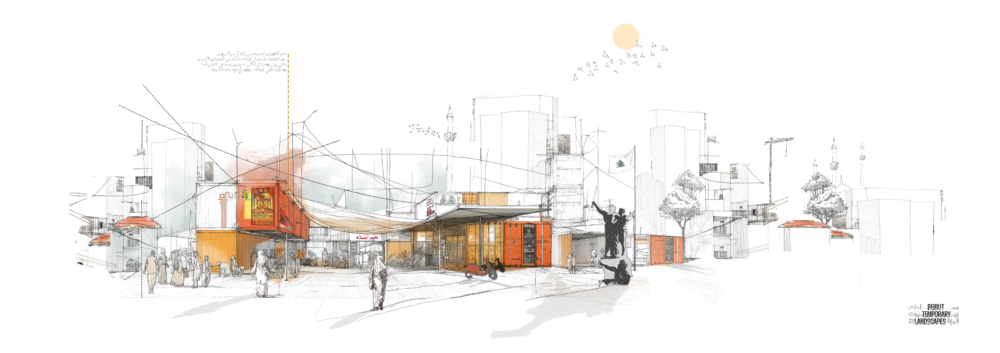
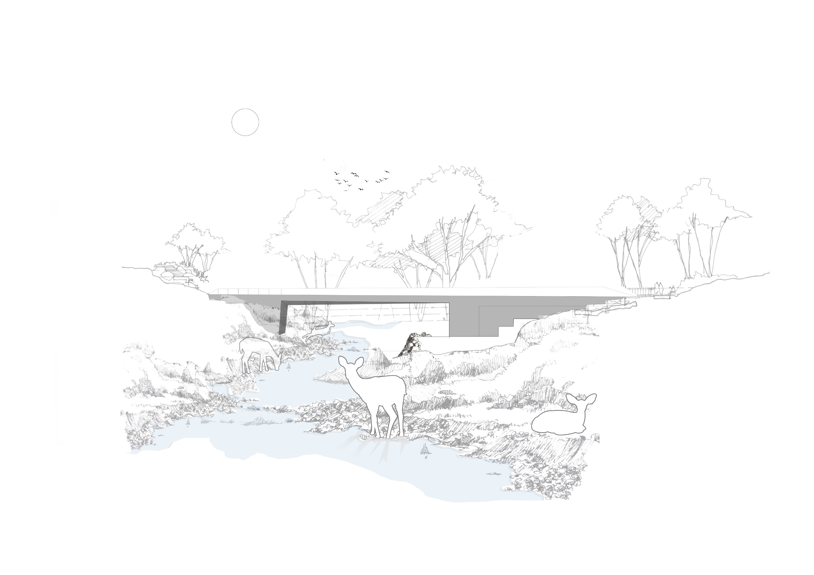
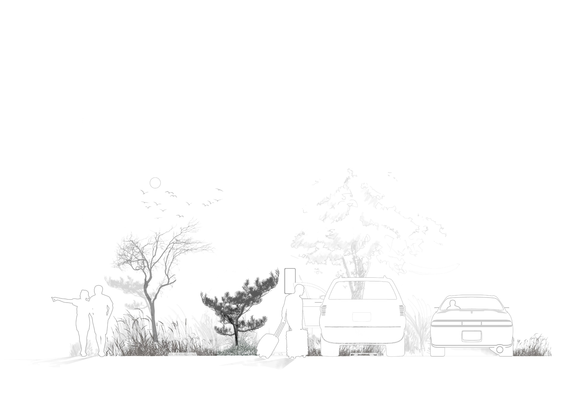

Displacement Metabolics ;
Re-inventing Beiruts Sheltering systems
01/BEIRUT TEMPORARY LANDSCAPES
A design proposal seeks to mitigate the profound issue of displacement that has impacted the majority of the Lebanese population, particularly in the South, the Bekaa and in Beirut's southern district: Dahye.
This is a direct result of the Lebanese-israeli conflict.

02/Beirut Water Narratives
03/Poland Airport (CPK) THE ILLEGAL POLISH AIRPORT (A LIVING UNDERPASS)

04/PARKING SPACES, DESIGN A NATURAL CANOPY
